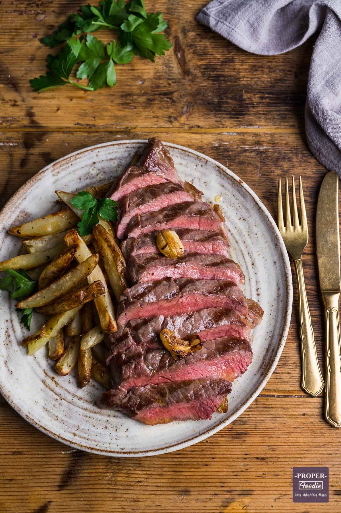

Home
Steak Recipe

Juicy Steak and Chips
Simple steak and chips recipe to enjoy in the evening
or Date night in at home
Ingredients
Steak
1 large potato
Salt
Pepper
Olive oil(or any cooking oil)
Cayenne pepper
Steps
Pre Heat oven at 150c
Season Steak with salt and pepper, let it side in room on the side for 5 minutes
Chop potato into little wedges, then season with salt, pepper and cayenee for abit of spice
Place potatos in oven for 20 minutes
Heat the pan with olive oil
Place steak on the heated oil and fry for 5 minutes each side
After cooking steak place it in a tub for let it rest for further 5 minutes to drain the water out
After 20 minutess take the potatos chips out and place them on plate with the Steak
Dinner is served